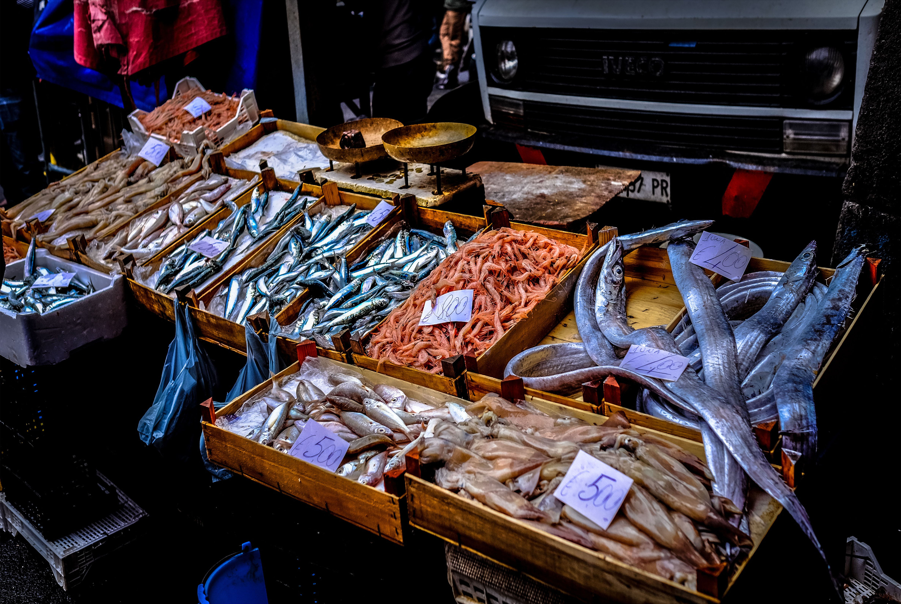

Ocean Delice Restaurant
One of the best place you'll ever be. Ocean Delice, inspired by the coastal authenticity of Mauritius, uniqueness of taste,beauty and freshness of our island.Want to feel like a king? Along with the magnificent view, come and relax with friends,family and loved ones,we let you enjoy the harmonious flavour in a luxurious environment and sea view!
-

Fresh Seafood
One of the best place you'll ever be. Ocean Delice, inspired by the coastal authenticity of Mauritius, uniqueness of taste, beauty and freshness of our island. Want to feel like a king? Along with the magnificent view, come and relax with friends, family and loved ones, we let you enjoy the harmonious flavour in a luxurious environment and sea view!
-

Tropical Cocktails
We serve the best sea food with the finest ingredients, located in the best coastal village in Mauritius, fresh sea food is available daily. Take your time and enjoy the tasty meal and each sip! Ocean Delice Restaurant. From lobster and fish to crabs and frog legs, we also serve salads, and much more. You'll not regret!
-

Services
We invite you to our relaxing area, where you'll feel at home, do not hesitate to bring your peers, bars remains open 24/24, quick snacks order and beverages available. Enjoy our tropical cocktails! Book a table now, order and get served once you arrive!We don't let our customer wait! Feel at home, feel good, feel like a king, one and only,...Ocean Delice!!!
Welcoming you at our restaurant:
| Opening Hours | |
|---|---|
| Days | Time |
| Mondays | CLOSED |
| Tuesday-Friday | 11 00 - 22 00 |
| Weekends | 11 30 - 23 00 |
| Public Holidays | 11 30 - 22 30 (NO HOME DELIVERY) |
About Our Restaurant
Founded since 1958 by the Mauritian John Lecollier,the restaurant's recipes are genuine,invented from family members of different ethnicity, Rodrigues, Reunion and Seychelles, with a touch of Mauritian taste and today's modernity... we serve with a lot of love and offer the best service at Ocean Delice. Thank you for taking time to get to know who we are.
- QUALITY FOOD AT A REASONABLE PRICE
- CUSTOMER IS KING
Contact Us
COASTAL ROAD ,
135 AVENUE VELDON,
FLIC EN FLAC, ABJ Park
MAURITIUS
Telephone Numbers
- +230 2314567
- +230 7997475
- +230 7083303
oceandelice@contact.com